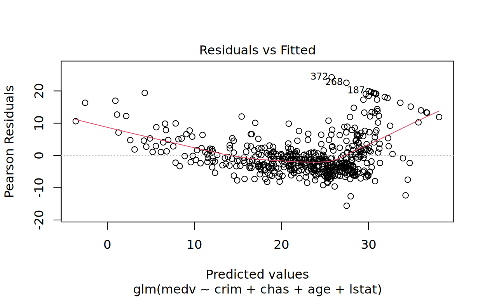
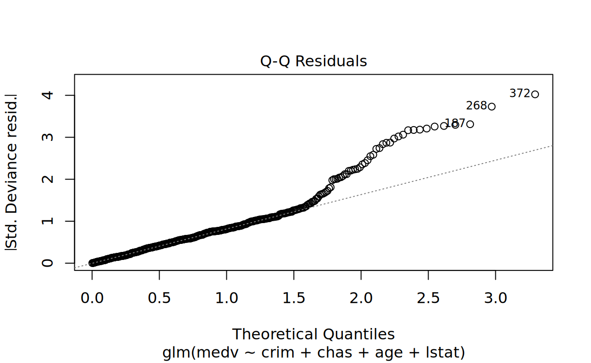
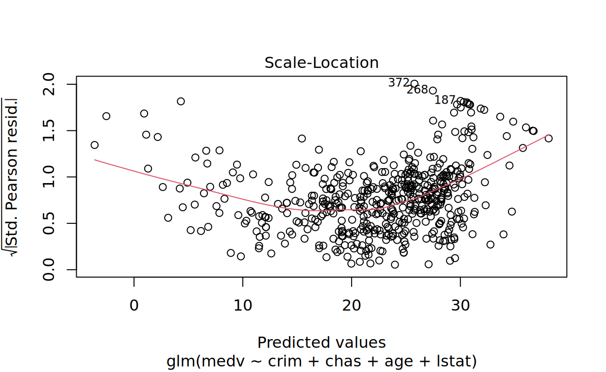
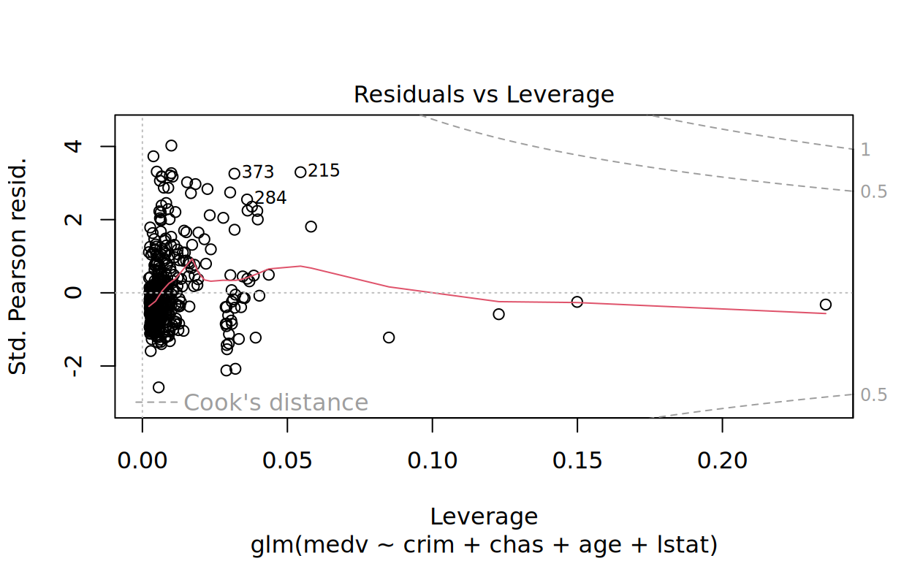

Setup
Load needed packages.
library(learnr)
library(mlbench)
library(boot)
library(tidymodels)## ── Attaching packages ────────────────────────────────────── tidymodels 1.2.0 ──## ✔ broom 1.0.7 ✔ recipes 1.1.0
## ✔ dials 1.3.0 ✔ rsample 1.2.1
## ✔ dplyr 1.1.4 ✔ tibble 3.2.1
## ✔ ggplot2 3.5.1 ✔ tidyr 1.3.1
## ✔ infer 1.0.7 ✔ tune 1.2.1
## ✔ modeldata 1.4.0 ✔ workflows 1.1.4
## ✔ parsnip 1.2.1 ✔ workflowsets 1.1.0
## ✔ purrr 1.0.2 ✔ yardstick 1.3.1## ── Conflicts ───────────────────────────────────────── tidymodels_conflicts() ──
## ✖ purrr::discard() masks scales::discard()
## ✖ dplyr::filter() masks stats::filter()
## ✖ dplyr::lag() masks stats::lag()
## ✖ infer::observe() masks shiny::observe()
## ✖ recipes::step() masks stats::step()
## • Use suppressPackageStartupMessages() to eliminate package startup messagesData
In this notebook, we use the Boston Housing data set. “This dataset contains information collected by the U.S Census Service concerning housing in the area of Boston Mass. It was obtained from the StatLib archive (http://lib.stat.cmu.edu/datasets/boston), and has been used extensively throughout the literature to benchmark algorithms.”
Source: https://www.cs.toronto.edu/~delve/data/boston/bostonDetail.html
data(BostonHousing2)
boston <- BostonHousing2
head(boston)Regression in R
In this section, we begin with estimating a fairly simple regression model using the median home value as the outcome and four variables as predictors.
m1 <- glm(medv ~ crim + chas + age + lstat, data = boston)
summary(m1)##
## Call:
## glm(formula = medv ~ crim + chas + age + lstat, data = boston)
##
## Coefficients:
## Estimate Std. Error t value Pr(>|t|)
## (Intercept) 32.73813 0.73635 44.460 < 2e-16 ***
## crim -0.07492 0.03543 -2.115 0.0350 *
## chas1 4.44525 1.07516 4.135 4.17e-05 ***
## age 0.02987 0.01220 2.448 0.0147 *
## lstat -0.97132 0.05026 -19.326 < 2e-16 ***
## ---
## Signif. codes: 0 '***' 0.001 '**' 0.01 '*' 0.05 '.' 0.1 ' ' 1
##
## (Dispersion parameter for gaussian family taken to be 36.61201)
##
## Null deviance: 42716 on 505 degrees of freedom
## Residual deviance: 18343 on 501 degrees of freedom
## AIC: 3264.7
##
## Number of Fisher Scoring iterations: 2Some more information about our first model.
anova(m1)plot(m1)
We can use predict to compute predicted home values
based on our regression model.
boston$pred1 <- predict(m1)
head(boston[,c(5,20)])Next, we fit an extended model that includes lstat
squared as an additional predictor variable.
m2 <- glm(medv ~ crim + chas + age + lstat + I(lstat^2), data = boston)
summary(m2)##
## Call:
## glm(formula = medv ~ crim + chas + age + lstat + I(lstat^2),
## data = boston)
##
## Coefficients:
## Estimate Std. Error t value Pr(>|t|)
## (Intercept) 40.752917 0.849614 47.966 < 2e-16 ***
## crim -0.128786 0.030343 -4.244 2.61e-05 ***
## chas1 3.662587 0.915025 4.003 7.21e-05 ***
## age 0.069733 0.010753 6.485 2.13e-10 ***
## lstat -2.645215 0.127447 -20.755 < 2e-16 ***
## I(lstat^2) 0.050618 0.003631 13.939 < 2e-16 ***
## ---
## Signif. codes: 0 '***' 0.001 '**' 0.01 '*' 0.05 '.' 0.1 ' ' 1
##
## (Dispersion parameter for gaussian family taken to be 26.41852)
##
## Null deviance: 42716 on 505 degrees of freedom
## Residual deviance: 13209 on 500 degrees of freedom
## AIC: 3100.6
##
## Number of Fisher Scoring iterations: 2Both models were fitted using the full data set. Evaluating the prediction performance of these models on the same data gives us their training error. Here, we compute the training MSE.
mean((predict(m1) - boston$medv)^2)## [1] 36.25024mean((predict(m2) - boston$medv)^2)## [1] 26.10525Train and test set
However, to get an estimate of the test error we have to proceed
differently. A simple option is to split the data into a train and test
set by random. Here we use sample to prepare and 80 to 20
percent split.
set.seed(7345)
Boston_split <- initial_split(BostonHousing2, prop = .80, strata = NULL, breaks = 2, pool = 0.1)The resulting object gives us the row positions of the sampled elements. We use these positions to split the data into two pieces.
boston_train <- training(Boston_split)
boston_test <- testing(Boston_split)Now, refit the previous regression model using the training set only.
m3 <- glm(medv ~ crim + chas + age + lstat, data = boston_train)
m4 <- glm(medv ~ crim + chas + age + lstat + I(lstat^2), data = boston_train)On this basis, we use these models to predict home values in the hold-out test set.
pred3 <- predict(m3, newdata = boston_test)
pred4 <- predict(m4, newdata = boston_test)And evaluate the prediction performance in the test set.
mean((pred3 - boston_test$medv)^2)## [1] 46.83435mean((pred4 - boston_test$medv)^2)## [1] 36.11249Regression and CV
Another (better) evaluation approach is to use cross-validation. To
demonstrate how cross-validation works, we will build our own CV loop by
hand. We start by shuffling the data with sample() and then
create 10 random folds (groups).
set.seed(7346)
boston <- boston[sample(nrow(boston)),]
folds <- cut(seq(1, nrow(boston)), breaks = 10, labels = FALSE)
table(folds)## folds
## 1 2 3 4 5 6 7 8 9 10
## 51 51 50 51 50 51 50 51 50 51set.seed(7346)
folds_2 <- vfold_cv(boston, v = 10)In the following loop, each group is used as a hold-out fold once per
iteration (test_data). The other groups
(train_data) are used to fit the regression model, which is
then evaluated on the hold-out fold. This results in 10 test MSEs, one
for each iteration.
pred <- rep(NA, nrow(boston))
for(i in 1:10){
holdout <- which(folds==i)
test_data <- boston[holdout, ]
train_data <- boston[-holdout, ]
m <- glm(medv ~ crim + chas + age + lstat, data = train_data)
pred[holdout] <- predict(m, newdata = test_data)
print(mean((pred[holdout] - boston$medv[holdout])^2))
}## [1] 39.86029
## [1] 49.81658
## [1] 35.04324
## [1] 47.37227
## [1] 17.06396
## [1] 34.60562
## [1] 37.26992
## [1] 41.01059
## [1] 41.69462
## [1] 29.93597# experimental for tidymodels
rf_mod <-
linear_reg() %>%
set_engine("glm", family = stats::gaussian()) %>%
translate()
rf_wf <-
workflow() %>%
add_model(rf_mod) %>%
add_formula(medv ~ crim + chas + age + lstat)
rf_fit_rs <-
rf_wf %>%
fit_resamples(folds_2)
# Define the recipe
rec <- recipe(qsec ~ hp, data = mtcars)
# Specify the linear regression model
lm_spec <- linear_reg()
# Combine recipe and model specification into a workflow
workflow <- workflow() %>%
add_recipe(rec) %>%
add_model(lm_spec)Computing the MSE over all hold-out observations gives us the cross-validated MSE.
mean((pred - boston$medv)^2)## [1] 37.40367Cross-validation is implemented in many R packages, which typically
allow more flexibility. For regression, we could e.g. use
cv.glm() from the boot package. The default
setting is to run leave-one-out cross-validation. For more information
see ?cv.glm.
cv.err <- cv.glm(boston, m1)
cv.err$delta## [1] 133.46155 36.49592We could also do 5-fold…
cv.err5 <- cv.glm(boston, m1, K = 5)
cv.err5$delta## [1] 133.65917 36.57513…or 10-fold CV.
cv.err10 <- cv.glm(boston, m1, K = 10)
cv.err10$delta## [1] 133.93646 36.90992On this basis, we can now check whether the extended model does not only yield a lower training error, but also performs better when using hold-out sets for model evaluation.
cv.err10.2 <- cv.glm(boston, m2, K = 10)
cv.err10.2$delta## [1] 141.75589 26.47675